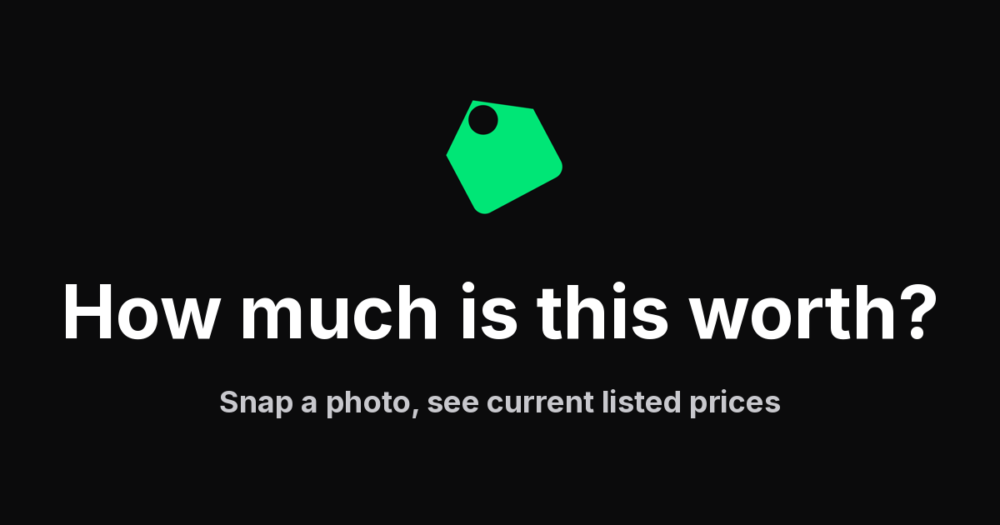

Someone is looking at the object in your hand and asking, quite specifically, how much is this worth? It might be a camera on a table, a bag you just found, or a watch you're about to take to a shop. The pressure is immediate. A low offer can sound reasonable if you have nothing to compare it with. A wild guess can make you list too high and wait, or too low and regret it.
The way to check this item is a photo, not a short name typed into a search box.  How Much Is It Worth: Scanner is built for that moment: photograph this piece, confirm what it is, and see a current listed range for similar items.
How Much Is It Worth: Scanner is built for that moment: photograph this piece, confirm what it is, and see a current listed range for similar items.
Take or upload up to three photos of the item in front of you. Start with the front. Add the back, the hallmark, the model plate, or the tag if you can see one. Those small details are often what separate two very different markets that share a name.
The app shows you an identification first. If the name, model, or year is wrong, fix it before prices run. Then you see a Worth about figure, the listed range, a confidence level, and the live listings behind it, which you can open and compare with the object in your hand. If listings are thin, the result is labelled as a rough estimate. Nothing is invented to fill a gap, and the result isn't a certified appraisal or an offer to buy.
That photo check is the point of the title. You're not valuing "a camera" or "a bag" as a category. You're checking this item, in this condition, against what similar pieces are listed for right now.
Want to try it with the item in front of you? Snap a photo at https://howmuchisitworth.today/. The website includes one free web scan a day. Get the free iPhone app at https://apps.apple.com/app/id6832980231, with 3 free scans plus 1 a week. On Android? Check https://howmuchisitworth.today/ for the Android release.
You can adjust the condition in a tap (Good, Near Mint, Graded, and more) and see the value change. If the result looks too high, check whether the comps are graded, boxed, or a different edition. If it looks too low, check whether a mark or date was missed. Then you can decide whether to keep it, list it, or walk into a shop with a clearer picture.
If you want to sell, copy a ready-made listing in a tap and pick Quick sale, Fair price, or Top dollar. You can also save the scan so this item doesn't disappear back into a drawer with no record.
It works for coins and banknotes, trading and sports cards, antiques, jewelry, gold and silver, watches, stamps, comics, books, vinyl, toys, handbags, sneakers, phones, cameras, games, furniture, and other everyday finds with a resale market. If people buy and sell it, the app can usually tell you how much this is worth. Rare or unusual pieces get a wider range and a tip to get a professional appraisal.
You don't need a paid plan to check a single item. The app gives you 3 free scans plus 1 a week. Optional Premium is $4.99 a week (no trial), or $29.99 a year with a 3-day free trial on the yearly plan only. Prices may vary by store and country.
Listed prices are still asking prices, and a dealer offer can sit below them. Use the range as a first look, not as a promise of what someone will pay you today. For rare or high-value items, treat the scan as a starting point and speak with a qualified specialist.
There's more on this at https://docs.google.com/document/d/e/2PACX-1vST53Lnq73H5t4iCbVlTNxfGBndWwd1_swwxMM3vi2D2XAbYPwwWzK5NTHziTZT9UNTj5MSOxt8ukE-/pub.
So when the question is how much is this worth, check this item by photo. Start at https://howmuchisitworth.today/, or download the app and scan it free.
I also wrote a companion post on the spoken form of the same question: this companion guide.